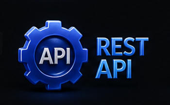

Technical Toolbox
My Skills, mapped in space.
Hover nodes to inspect details and highlights of my backend system architecture capabilities.
Hover nodes to inspect details and highlights of my backend system architecture capabilities.

Object-oriented programming, concurrent systems, Stream API, JVM performance tuning.

Application bootstrap, dependency injection (IoC), embedded server configuration.

Filter chain authorization, user authentication, security endpoint protection.
Database access abstraction, entity object-relational mapping, custom repository interfaces.
Relational persistence contexts, lazy fetching settings, database cache control.
Distributed Eureka registry, gateway path routing, Saga transactional flows.

JSON data structures, path route mappings, HTTP status code validations.

Message queues, event streaming pipelines, publisher-consumer synchronization.

Cache lookup storage, key expirations, failover connection redirect paths.

Relational databases, transactions ACID checks, indexing optimization.
Relational schemas, query optimization, view declarations.
Document models, index path creations, basic document CRUD updates.

Branch lifecycle controls, conflict merges, PR feedback workflows.

Build automation systems, dependency declarations, build output generation.

Application servlet container, web server deployments, configuration tuning.
Environment customization, compiler tracing, codebase diagnostics tools.
Clean semantic DOM tree nodes, responsive layout configurations, styles bindings.
Asynchronous routines, REST client API fetching logic, browser adjustments.
Stored procedures, database triggers, execution block algorithms.
Sessionless authorization token strings, payload validations, security.
Relational queries logic, complex join operations, schema constraints.